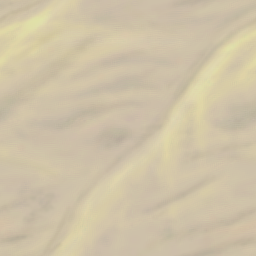

Click here to Proceed
DATA XPLORER

LOADING
You are now going down into the water column.
Use the CTD data to explore points of interest.
Keep an eye out for changes in the conditions or any curious life forms you might see.
Continue